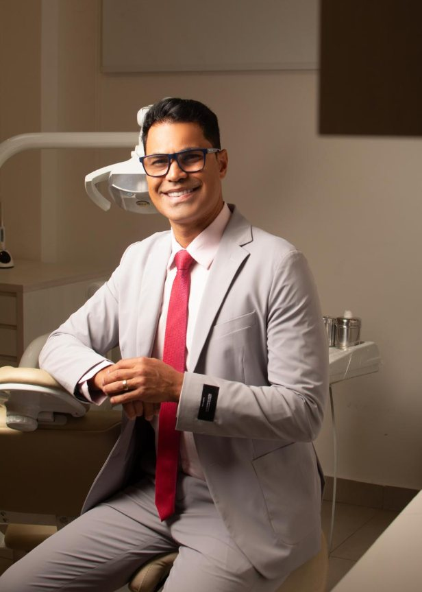
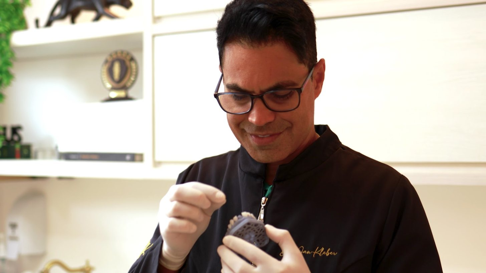
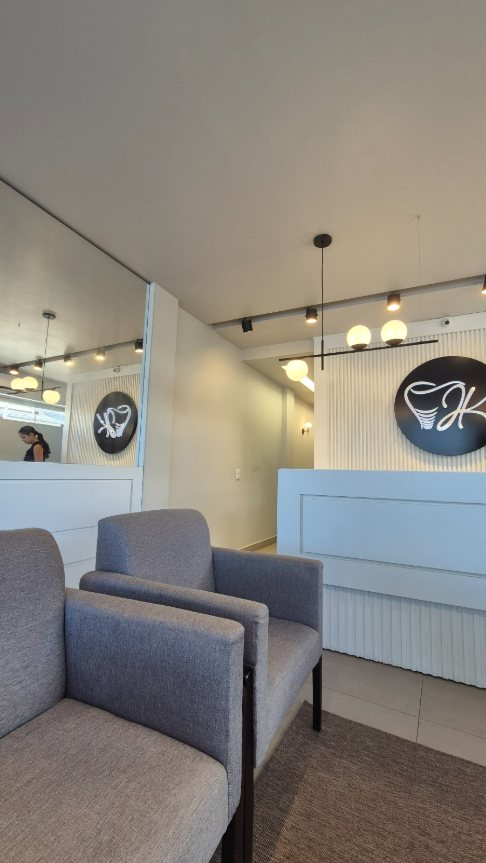
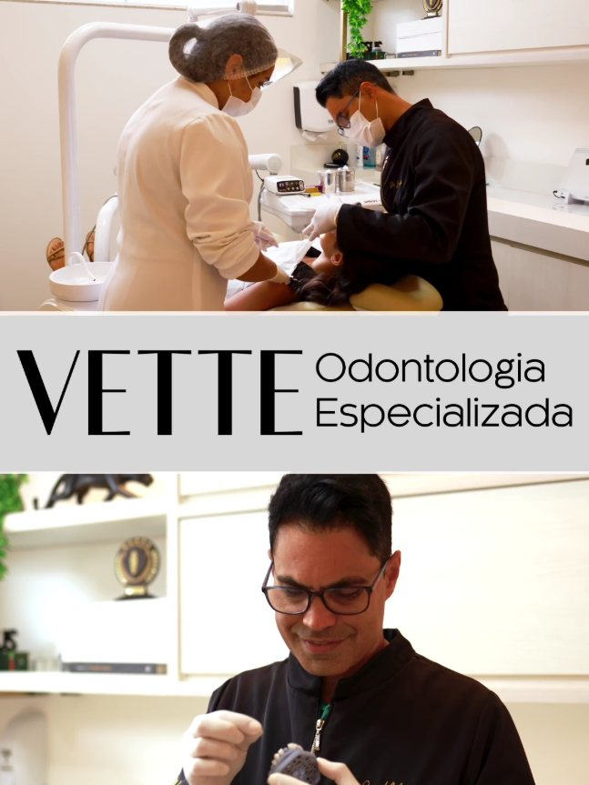
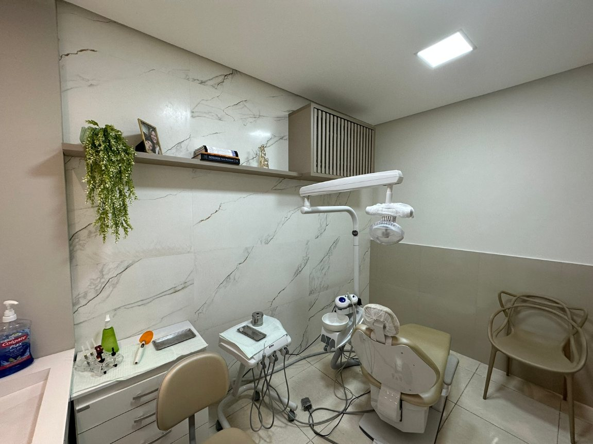

Lentes de contato dental
Lâminas ultrafinas desenhadas para o seu rosto, respeitando proporção, cor e contorno gengival. Naturalidade, harmonia e exclusividade: um sorriso que chama atenção pela perfeição sutil, não pelo exagero.
Reabilitação oral, próteses, implantes e lentes de contato dental planejados para o seu rosto e a sua história. Cada sorriso é estudado antes da primeira lente.


Planejamento e confecção de próteses acompanhados de perto pelo Dr. JanSou o Dr. Jan Kleber de Vette, cirurgião-dentista dedicado à reabilitação oral e à estética do sorriso. Meu trabalho é devolver função, segurança e autoestima a quem perdeu a vontade de sorrir, com resultados que parecem seus, e não “feitos”.
A VETTE Odontologia Especializada nasceu de um terreno vazio em Teixeira de Freitas e de muita fé. Hoje é uma clínica completa, com equipe própria e pacientes que acompanham o nosso trabalho há mais de quinze anos.
Também compartilho o que aprendi: em novembro de 2026 ministrei o curso Facetas em Resina Composta: do planejamento à prática na Faculdade Anhanguera de Teixeira de Freitas.
Gratidão a Deus, à minha família, meus colaboradores, amigos e pacientes pela torcida e confiança em meu trabalho.Dr. Jan Kleber
Cada caso começa com avaliação individual e planejamento. Só depois de entender o seu rosto, a sua mordida e o que você quer transmitir é que definimos o tratamento.
Lâminas ultrafinas desenhadas para o seu rosto, respeitando proporção, cor e contorno gengival. Naturalidade, harmonia e exclusividade: um sorriso que chama atenção pela perfeição sutil, não pelo exagero.
Próteses fixas e removíveis com aparência natural e conforto para mastigar, falar e sorrir sem preocupação.
Tratamento integrado para quem perdeu dentes, função ou desgastou o sorriso, incluindo casos de bruxismo.
Dentes fixos sobre implantes. Para grandes perdas ósseas na maxila, avaliamos a indicação de implantes zigomáticos.
Coroas que devolvem forma e resistência a dentes muito restaurados ou fragilizados.
Alternativa conservadora para corrigir forma, cor e pequenos desalinhamentos, com planejamento do início ao fim.
Ajuste do contorno da gengiva para equilibrar a proporção dos dentes, muitas vezes associado às lentes.
Nem todo sorriso precisa de uma grande mudança. Às vezes, o que faz diferença está nos detalhes. Toque em uma foto para ampliar.
Imagens de pacientes publicadas com autorização. Os resultados variam de pessoa para pessoa; cada caso precisa ser avaliado individualmente para saber a indicação do tratamento.
Conversamos sobre o que incomoda você e examinamos dentes, gengiva e mordida.
Fotos, exames e estudo do sorriso definem alinhamento, proporção e cor ideais para o seu rosto.
O tratamento é feito com precisão e com você informado em cada etapa.
Revisões periódicas para que o resultado dure e continue saudável.
Um sorriso bonito começa muito antes da primeira lente. Começa no planejamento.
São mais de 790 publicações no @dr.jankleber, com casos, explicações e o dia a dia da clínica.
No centro de Teixeira de Freitas, com recepção acolhedora, consultórios equipados e uma equipe atenciosa do primeiro contato ao pós-tratamento.



O que os pacientes dizem sobre o atendimento do Dr. Jan e da equipe.
“Somos clientes há mais de 15 anos do Dr. Jan Kleber. Espetacular! Tratamento especializado e moderno, equipe fantástica, carinhosa e atenciosa.”
“Fui na intenção de resolver um problema de bruxismo e Dr. Jan restaurou minha autoestima em relação ao sorriso quebrado e sem vida.”
“Extremamente competente, atencioso e transmite muita segurança durante todo o atendimento. A clínica é organizada e o ambiente é agradável.”
“O seu trabalho e cuidado me encantaram, ele fez muito além do que esperava. Também agradeço pela equipe, que é muito atenciosa.”
“O atendimento foi de primeira e o resultado impecável. Fiquei impressionada com a rapidez e precisão com que todo o tratamento foi executado.”
“Mega profissional, com atendimento humanizado. Se você quer realizar o seu sonho, esse é o lugar!”
Me chama no WhatsApp e conte o que você gostaria de mudar. A equipe retorna para marcar o melhor horário.